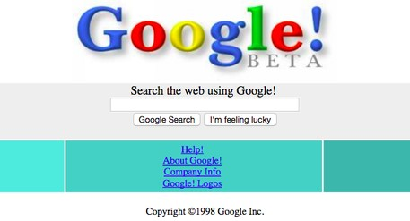
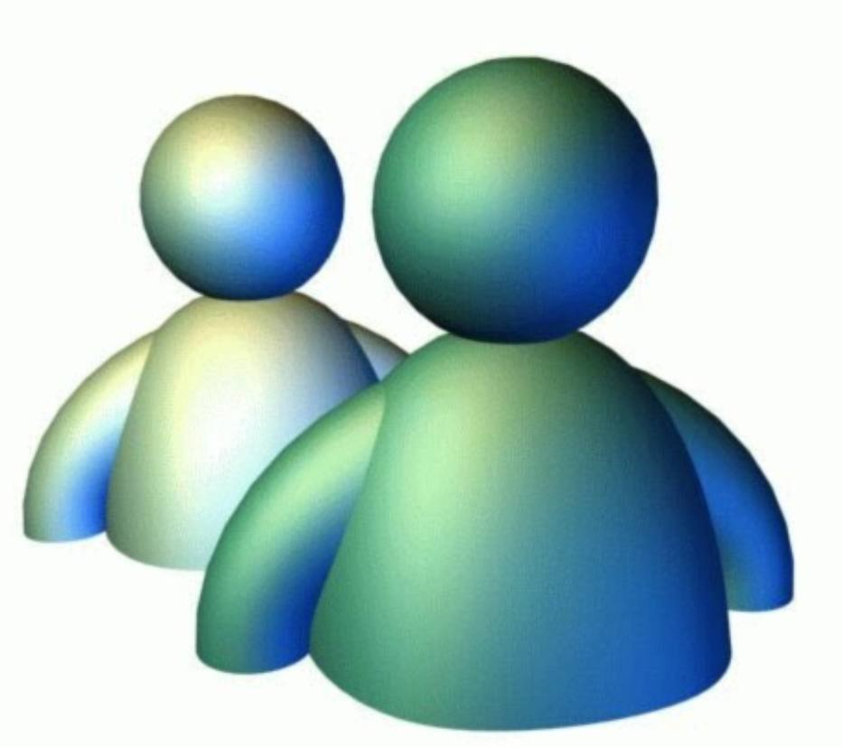
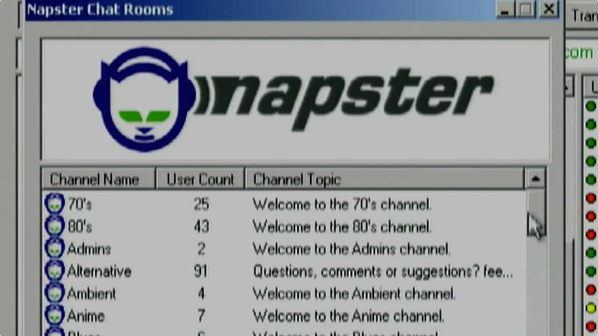

Primeiro Site da InternetPor Da Redação; Para O TechTudo08/08/2015 11h08 Atualizado há 7 anosQuem usa a Internet agora pode até não imaginar como ela era no passado. Você já se perguntou qual foi o primeiro site a estar online? Conheça o The Project, página pioneira na Internet criada em 1991 por Tim Berners-Lee, físico do Centro Europeu de Pesquisa Nuclear (CERN), considerado o pai da Web. Esqueça imagens, vídeos ou animações. Há mais de 20 anos, a Internet era assim: estática. O site sob o domínio info.cern.ch/hypertext/WWW/TheProject.html entrou no ar em 6 de agosto de 1991. O site descreve detalhes da World Wide Web, ideia do próprio Berners-Lee, e celebra 24 anos em 2015. A WWW tinha como objetivo inicial permitir que os profissionais do CERN trocassem informações científicas a partir de seus próprios computadores. Assim, eles não necessariamente precisariam estar no mesmo espaço físico para saber sobre o andamento de um projeto, bastando apenas estar conectado ao servidor online. O site do The Project serviu de teste para isso. Na página, os usuários poderiam buscar informações sobre os códigos necessários para criar um site semelhante, os softwares utilizados, referências bibliográficas e também o contato do pessoal envolvido no projeto. A página também serviu como demonstração de hipertextos aplicados à Internet. A página também serviu como demonstração de hipertextos aplicados à Internet. Bem antes, em 1980, Berners-Lee já tinha sugerido utilizar o conceito para facilitar o compartilhamento de informações entre os funcionários do CERN. Hoje, é impossível imaginar a Internet sem os hiperlinks. Todo o projeto do primeiro site do mundo foi desenvolvido usando um computador da NeXT. A empresa foi criada por Steve Jobs, em 1985, após ele ser forçado a deixar o comando da própria Apple. |
||
|  | ||
|  |  |